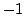

Next: Assembling vector-valued problems: The
Up: Vector-valued problems
Previous: The elastic equations
The Stokes equations
For a nonsymmetric problem, we take the Stokes equations:
We denote by
 the entire solution vector. In the weak
form, the above equations read
the entire solution vector. In the weak
form, the above equations read
Since we integrated the gradient term in the first equation by parts, but not
the divergence term in the second equation, the problem is now
nonsymmetric. If we would have liked, we could have made the problem symmetric
again by multiplying the entire second equation by , but we don't want to
do that for now for illustrational purposes.
Again, we introduce the operator  for this problem, which after some
computations turns out to be
for this problem, which after some
computations turns out to be
Again, it is clear from this form that we could have made the operator
symmetric by multiplying the last row by . Note when checking the symmetry
of that taking the transpose of such an operator means reverting the
directions of the arrows over the operators, and exchanging their order.
For example, using the first term, these two steps are
 .
.
Next: Assembling vector-valued problems: The
Up: Vector-valued problems
Previous: The elastic equations
Wolfgang Bangerth
2002-06-14